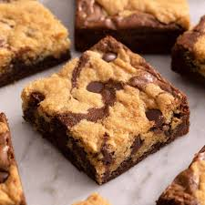

Brookie Recipe

Thick and Soft Brookies
Delightful dessert that combines the best of
both worlds—brownie and cookie! It features a fudgy,
ich brownie base topped with a chewy, sweet cookie layer.
The two textures come together in a perfect, decadent
treat that's a sure hit for anyone who loves both brownies
and cookies.
Ingredients:
- For the Brownie Layer:
- 1/2 cup (115g) unsalted butter, melted
- 1 cup (200g) granulated sugar
- 2 large eggs
- 1 tsp vanilla extract
- 1/3 cup (40g) unsweentened cocoa powder
- 1/2 cup (60g) all purpose flour
- 1/4 tsp salt
- For the Cookie Layer:
- 1/2 cup (115g) unsalted butter, softened
- 1/2 cup (100g) granulated sugar
- 1/2 cup (90g) brown sugar, packed
- 1 large egg
- 1 tsp vanilla extract
- 1 1/2 cups (180g) all purpose flour
- 1/2 tsp baking soda
- 1/4 tsp salt
- 1 cup (175g) chocolate chips
Steps:
- Preheat Oven: Preheat your oven to 350°F (175°C) and grease or line an 8x8-inch baking pan with parchment paper.
- Make the Brownie Layer:
- In a bowl, whisk together the melted butter and granulated sugar until smooth.
- Add the eggs and vanilla extract, and whisk until well combined.
- Stir in the cocoa powder, flour, salt, and baking powder. Mix until smooth.
- Pour the brownie batter into the prepared baking pan and spread it evenly.
- Make the Cookie Dough Layer:
- In a separate bowl, cream together the softened butter, granulated sugar, and brown sugar until light and fluffy.
- Add the egg and vanilla extract, and mix until combined.
- n another bowl, whisk together the flour, baking soda, and salt. Gradually add the dry ingredients to the wet ingredients, mixing until just combined.
- Fold in the chocolate chips.
- Spoon the cookie dough over the brownie layer, gently spreading it to cover the top. It’s okay if it’s not perfectly even.
- Bake the brookie in the preheated oven for 30-35 minutes, or until a toothpick inserted into the center comes out with only a few moist crumbs (not wet batter).
- Let the brookie cool in the pan for about 15 minutes before cutting it into squares. You can serve it warm, or allow it to cool completely.
Home